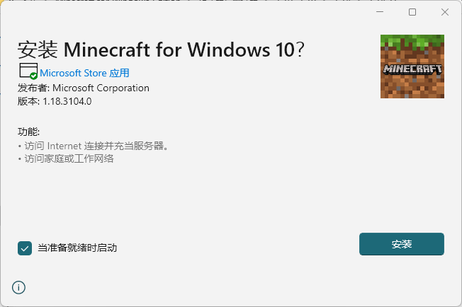
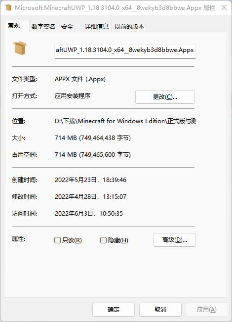
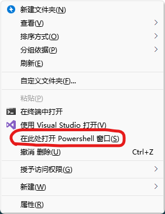
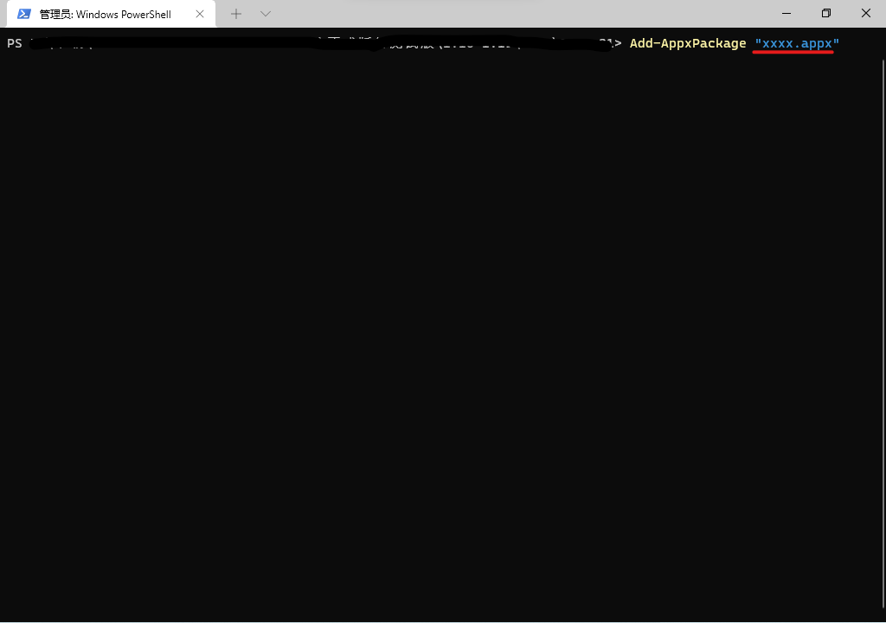

欢迎来到 Minecraft for Windows 版本库
版本库 专注于保留 Minecraft for Windows 过去发布的所有版本，希望能够发现并收录遗失在时间中的历史版本。
注意
本网站仅与Minecraft for Windows (基岩国际版) 有关。
我们提供微软应用商店上发布过的官方原版 Minecraft，安装包完全没有被修改。
Minecraft 原版具有正版验证机制，如果你没有购买Minecraft，将不能进入游戏。
下载
游戏关联程序下载
这不是游戏安装包！这是游戏需要的关联程序！ 如果电脑里没有“微软应用商店”，则无法使用这些下载链接。但是我们有提供“备用地址”，您可以通过“备用地址”来下载它们。注意
这不是游戏安装包！这是游戏需要的关联程序！ 如果电脑里没有“应用安装程序”，则需要使用“安装步骤”中的方法二安装。注意
下载太慢？
可以使用多线程下载器，如IDM下载器（如需要，浏览数据库文件“++FAQ常见问题++”，安装IDM下载器和阅读有关帮助设置IDM的文件）
使用说明
关于系统版本与架构
您的操作系统必须是Windows 10及以上版本。Mojang 提供了基于不同架构的 Minecraft for Windows 的安装包，因此并非所有安装包都能在你的设备上正常运行。
共有以下两种指令集架构，请根据设备做出选择：
| 架构 | 适用情况 |
|---|---|
| x86 | 适用于32位、64位的 Windows 10 及以上操作系统 |
| x64 | 仅适用于64位的 Windows 10 及以上操作系统 |
不知道系统版本/架构？
右击桌面的“此电脑”，选择属性，即可看到电脑系统版本及系统架构信息
安装步骤
*.appx 是应用程序安装包格式。类似于apk。appx用于分发、安装应用程序到 Windows 10 及以上通用平台。
详细步骤
步骤1:打开
双击打开
√正确示例
X错误示例
①打开的是解压缩软件

②解压出来打开EXE

步骤2:安装
单击安装按钮
相关帮助
1、我出现了像上面一样的错误怎么办？
①右击安装包选择打开属性，属性里点击更改按钮
②选择应用安装程序（如果没有，请使用下面的“安装方法二”）

③最后，第一次点击当前界面的确定，第二次点击属性里的确定。完成。
2、显示证书问题无法安装的，请看数据库文件“++FAQ常见问题++”，里面有解决方法。
3、显示应用包解析错误的，很有可能是下载时损坏了，需重新下载
4、显示安装权限不足然后报错的：
打开“设置”→ 选择“应用”→ 选择“应用和功能”→ 找到“选择获取应用的位置”并展开菜单→ 选择“任何来源”即可。
详细步骤
（适用于电脑里没有应用安装程序的用户）
步骤1:打开PowerShell
APPX安装包的所在文件夹里按住Shift并右击，选择“在此处打开PowerShell窗口”
步骤2:输入代码
Add-AppxPackage "将引号内的内容改为安装包名字（包括拓展名）"
例：Add-AppxPackage "xxxx.appx"
（注意空格，引号是英文的别打成中文的引号）
步骤3:安装
按键盘上的Enter键（回车）

相关帮助
若上面的安装日志内有红字，有可能是代码执行错误或安装包出错！若自己未能解决问题，请将上面安装日志内的内容发送给技术支持人员，您可以向他们寻求帮助。
APPX安装故障排除
其他问题
登录问题？无法打开？疑难解答？都在这里。常见Minecraft物品错误代码
| 错误代码 | 解决方法 |
|---|---|
| 蝙蝠 | 下载安装Xbox Identity Provider。然后重新登录。 |
| 苦力怕 | 确保网络稳定且配置正确。 |
| 弩 | 请尝试重启游戏或在登录前打开游戏闲置几分钟。 |
| 溺尸 | 请完全关闭Minecraft，重置您的设备，然后再次尝试登录。 |
| 恶魂 | 请尝试注销Xbox Live，然后重新登录。 |
| 萤石 | 尝试重启游戏或等待服务恢复正常后重试。 |
| 干草块 | 请确保Xbox应用是最新的，然后尝试注销后重新登录。 |
| 猪灵 | 账号有多台设备同时登录，您可以重启游戏或重装游戏然后重试。 |
| 河豚 | 请请完全关闭Minecraft，重置您的设备，然后再次尝试登录。 |
电脑没有以上提到的程序？您可以在“下载”中找到“游戏关联程序”，下载所需程序安装包。注意
错误代码0x803F8001导致无法打开
错误对话框：

①请购买正版游戏，或使用正版账户登录微软应用商店，或重新在微软应用商店登录微软账号。
②已有正版，但还有该提示？
打开“设置”→ 选择“时间和语言”→ 打开“语言和区域”选项卡 → 找到“区域”选项中的“国家和地区”→ 选择“美国”
③检查Windows更新。
注意
此问题受多重影响，较难排查错误，所以这些方法有时并不能解决该问题。最好的解决方法是去微软社区寻求专业人士帮助（寻求帮助时要把您的问题讲详细哦）。
x86和x64游戏内容和功能上有区别吗？
在游戏内容上没有任何区别。但在渲染引擎方面，x86版本可以正常加载大部分光影包，x64版本所有光影包不能正常加载。（但从1.18.30开始，无论版本是x86还是x64，由于渲染龙的加入，所有使用HLSL或GLSL渲染引擎的光影将不可用。在1.18.30以前的x86版本，光影仍可以使用。）
文件命名含义
Microsoft.Minecraft + 类型_版本名 (内部版本号)_指令集架构__版本代码.Appx
举例
正式/Beta版安装包:
Microsoft.MinecraftUWP_1.18.3104.0_x64__8wekyb3d8bbwe.Appx
Preview版安装包:
Microsoft.MinecraftWindowsBeta_1.19.1021.0_x64__8wekyb3d8bbwe.Appx
关于我们
版本库维护与更新：
- @RemyYYZ
联系我们：
- QQ: 2598814466
- 问题反馈QQ群：738246332
- E-mail: RemyYYZ@outlook.com
为我们发电
您可以选择发电或不发电，发电金额由您自选。